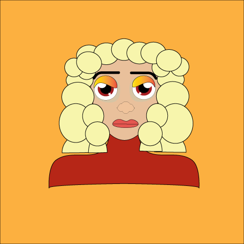

Caroline lives within another Dimension, this universe is filled with differnt classes of species. Some of these species have powers, which majority of them reside in the city of Helen, known as the city of magic. However, Caroline's bloodline is from a rare species, which have gone almost extinct. This species is known to be Willows, which are magical beings capable of manipulating the laws of nature within the 4 elements and some are known to have telekinesis. However, within her society the Willow species are negelected and discriminated, because their powers are capable of distruction. The remainder of the 3 Willow families resides within the the town called Helen.
